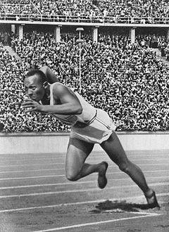
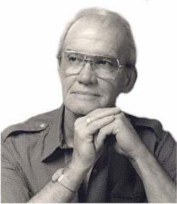
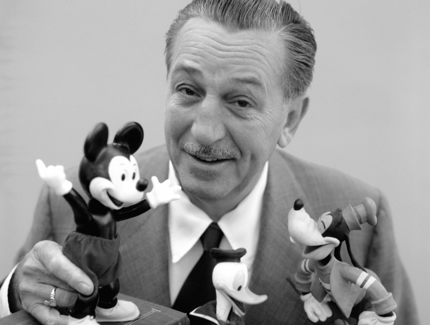
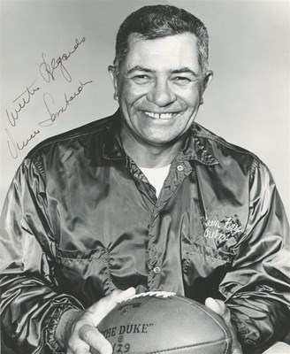
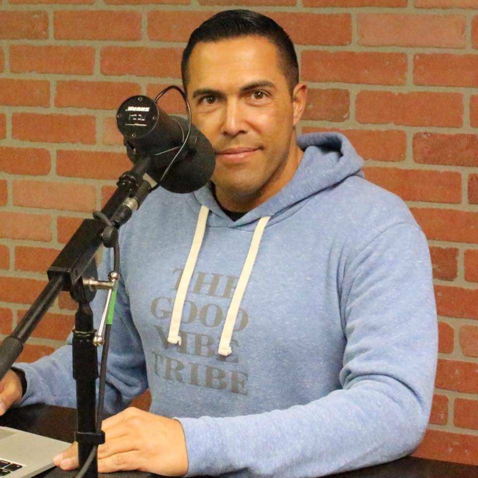

Quotes
A difficult time can be more readily endured if we retain the conviction that our existence holds a purpose-a cause to pursue,
a person to love,a goal to achieve
-john c.Maxewell
You will never change your life until you change something you do daily.The secretof your success if found in your daily
routine.
-john c.Maxewell
We all have dreams.But in order to make dreams come into reality,it takes an awful lot of determination,dedication,self-discipline
and effort.
-Jesse Owens

So long as there is breath in me,that long I will persist.For now i know one of the greatest principles on success,if I persist
long enough i will win
-Og Mandino

Show me a person who doesn't make mistakes and I will show you a person who doesn't do anything
-Lenard Rubino
The way to get started is to quit talking and begin doing
-Walt Disney

It's not whether you knocked down,It's whether you get up
-Vince Lombardi

People who are crazy enough to think they can change the world,are the ones who do
-Rob siltanen
Knowing is not enough;we must Apply.Wishing is not enough;We must do
-johann Wolfgang Von Goethe
Life is 10% what happens to you and 90% How you react to it.
-Charles R.Swindoll
Only I can change my life.No one can do it for me.
-Carol Burnett
The truth is,unless you let go,unless you forgive yourself,unless you
forgive the situation,unless you
realise that situation is over,you cannot
move forward.
-Steve Maraboli
